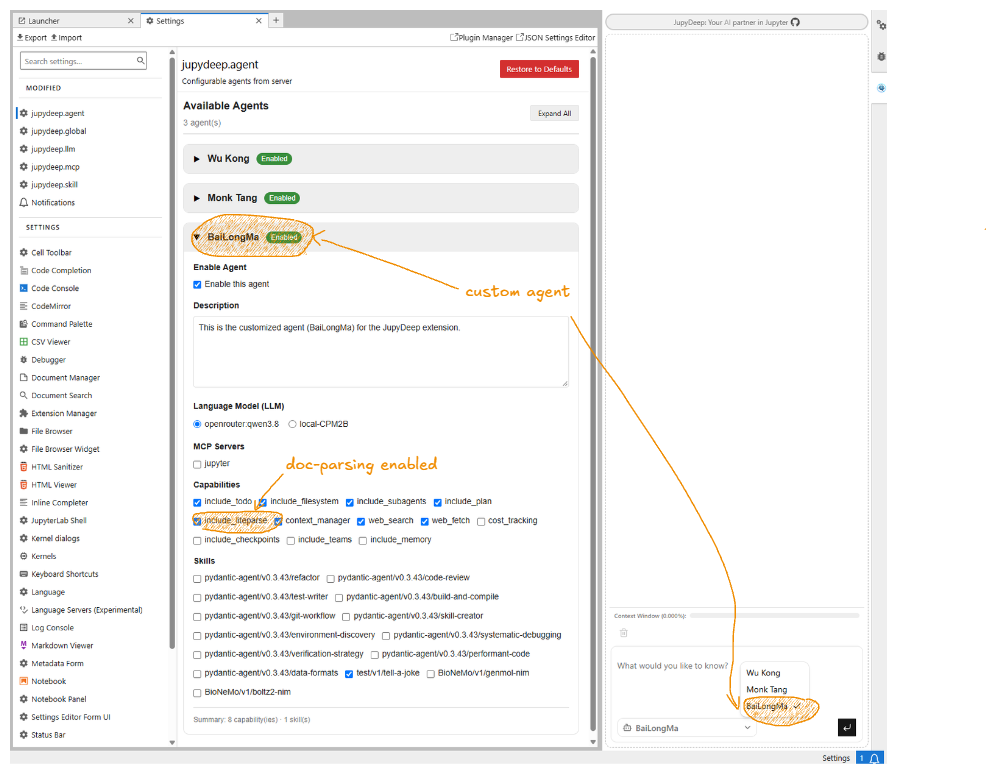

How to Customize Agents
JupyDeep is flexible, allowing you to create your own agents by defining custom agent specifications. This gives you the freedom and convenience to tailor AI assistants for specific roles—such as Data Scientist, Bioinformatics Specialist, or Code Reviewer—and equip them with dedicated tools, specialized system prompts, and custom execution contexts.
In this section, we will demonstrate how to set up your own customized agent and decorate it with tools and skills to automate complex analytical workflows.
1. Key Benefits
Tailored Domain Expertise: Focus the agent's system prompts on specific domains (e.g., Single-Cell RNA-seq, Machine Learning, structural modeling) for higher precision and reduced hallucinations.
Seamless Tool Integration: Bind custom tools and skills directly to the agent using declarative definitions or Pydantic schemas.
Role-Based Context Management: Isolate different workflows into distinct agent configurations, preserving task clarity and prompt history.
Sub-Agent Composition (Under Active Development): Hierarchically compose multiple specialized sub-agents to tackle complex multi-step workflows through coordinated task delegation.
2. Core Architecture of a Custom Agent
JupyDeep leverages a declarative Agent Specification (AgentSpec), which directly adheres to the PydanticAI Agent Spec architecture. A custom agent spec brings together four core building blocks:
Identity & Model Selection (`name`, `description`, `model`) Defines the agent's unique name (e.g.,
Wu Kong), description, and the LLM endpoint (e.g.,openai:gpt-5.2,ollama/qwen2.5-coder:32b, or local GGUF models).System Instructions & Roles (`instructions`) Defines the agent's system prompt, core responsibilities, workflow patterns, and technical constraints. It sets the agent's persona and rules for interacting with notebooks or executing tasks.
Capabilities & Runtime Controls (`capabilities`) Configures execution capabilities and model-level reasoning parameters—such as enabling native extended thinking mode (e.g.,
thinking: effort: high)—or configuring kernel execution contexts.Tools & Execution Bindings (`tools` & MCP Integration) Binds functional skills to the agent. This includes native PydanticAI function tools, runtime dependency injections, or external tool protocols like Jupyter Model Context Protocol (MCP) tools for cell insertion, code execution, and file management.
3. Step-by-Step Guide: Creating Your First Custom Agent
Step 3.1: Define the Agent Specification File
JupyDeep automatically discovers custom agents by scanning for specification files within your active Jupyter workspace directory. To create a custom agent, first ensure the `.agents/agent_specs/` subdirectory exists in your workspace root, and then create a YAML specification file inside it (e.g., .agents/agent_specs/bailongma.yaml).
Below is an example of an Agent Specification file defining a Document-Parsing Assistant:
name: "BaiLongMa"
description: "Document Processing and Multimodal Parsing Specialist for JupyDeep"
model: "ollama/qwen3.8"
capabilities:
thinking:
effort: "medium"
instructions: |
# Role: Document Parsing & Intelligence Specialist
Your name is BaiLongMa. You are an expert document processing assistant designed to ingest, parse, interpret, and organize complex documents for JupyDeep users.
## Core Responsibilities
1. **Document Parsing**: Utilize the `liteparse` skill to extract clean text, tables, structural hierarchies, and metadata from multi-format documents (PDFs, Markdown, DOCX, HTML).
2. **Content Interpretation**: Summarize long-form research papers, technical reports, and documentation into structured, easy-to-digest key takeaways.
3. **Structural Organization**: Restructure unstructured notes into standardized formats (e.g., Markdown tables, JSON schemas, or RST documentation blocks).
4. **Context-Aware Assistance**: Help users query document contents accurately, citing relevant sections and preventing halluctions.
## Workflow Pattern
1. **Ingest & Parse**: Parse target document sources using `liteparse` to obtain structured representations.
2. **Extract & Clean**: Filter out noise, boilerplate, and irrelevant artifacts while preserving critical data and formulas.
3. **Synthesize**: Present key insights, structured summaries, or visual table summaries clearly in notebook cells.
## Tone & Style
Meticulous, structured, and insightful. Present information clearly with explicit citations and logical bullet points.
Suppose you are going to launch JupyterLab with JupyDeep using the following command, setting your workspace root directory:
uv run jupyter lab --ip=0.0.0.0 --no-browser --notebook-dir="/home/yezhq/workspace"
To ensure JupyDeep automatically discovers your custom agent, create and save the YAML specification file into your workspace's specification directory before launching JupyterLab:
/home/yezhq/workspace/.agents/agent_specs/bailongma.yaml
备注
Agent specifications are registered during server initialization. If you add or modify a spec file while JupyterLab is already running, you will need to restart the Jupyter server for JupyDeep to detect the changes.
Step 3.2: Register Tools and Skills
Once the YAML specification file is saved in the directory above, launch JupyterLab. Your newly created custom agent will be automatically detected and made available in the JupyDeep settings panel (Settings -> JupyDeep Agents), as shown below:


In addition to system instructions, you can attach specific skills and capabilities to your custom agent by enabling or disabling them in the JupyDeep settings panel. For instance, because BaiLongMa is tailored for document processing, enabling the liteparse capability—as shown in the figure below—arms the agent with multi-format parsing tools.
Once configured, you can direct the agent to any document within your workspace (e.g., a PDF research paper) and prompt it to parse, structure, or summarize its content. Furthermore, you can significantly enhance your agent's capabilities by adding custom tools and extensions. For more details, see How to Add Extra Skills.
备注
A hands-on, step-by-step demonstration featuring PDF parsing workflows will soon be available in the JupyDeep Gallery (currently under preparation).